YouTube Interface Customizer

This is an open source Firefox extension that allows you to customize a wide variety of elements of the YouTube interface in your favor.
Table of Contents
Back to TopInstallation
To get a development environment, first make sure that you have the Firefox browser installed.
Then clone our GitHub repository to your local device and visit the Mozilla Firefox debugging page in the Firefox browser.
Click the Load Temporary Add-on... button and select src/manifest.json.
Then you will be able to simulate an environment with this extension until you exit the browser.
There is also a self-distributed version here. Make sure you have a Mozilla developer account (you can sign up one here), and you are using the Firefox browser so as to use this link.
Features
The outline of the features of YouTube Interface Customizer is as follows:
- General: Customize color theme.
- Homepage: Hide video suggestions; Customize homepage layout.
- Navigation bar: Customize color; Redirect YouTube logo; Hide buttons and sections.
- Video player: Customize the scrubber and progress bar; Customize video player layout.
General
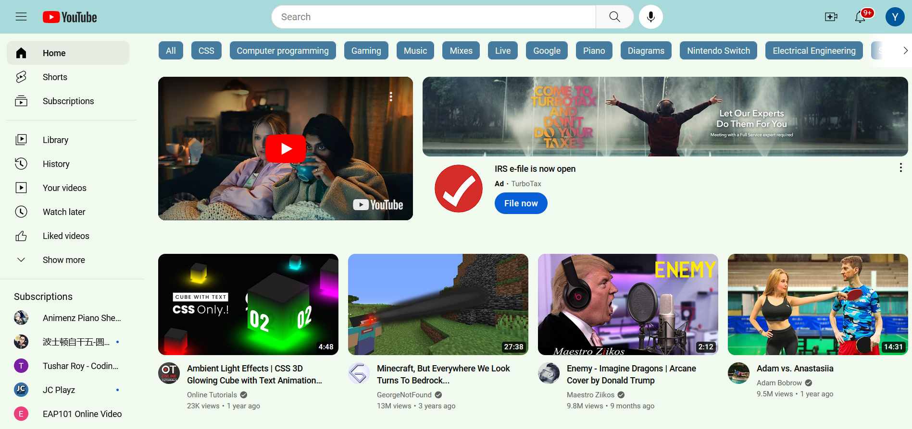
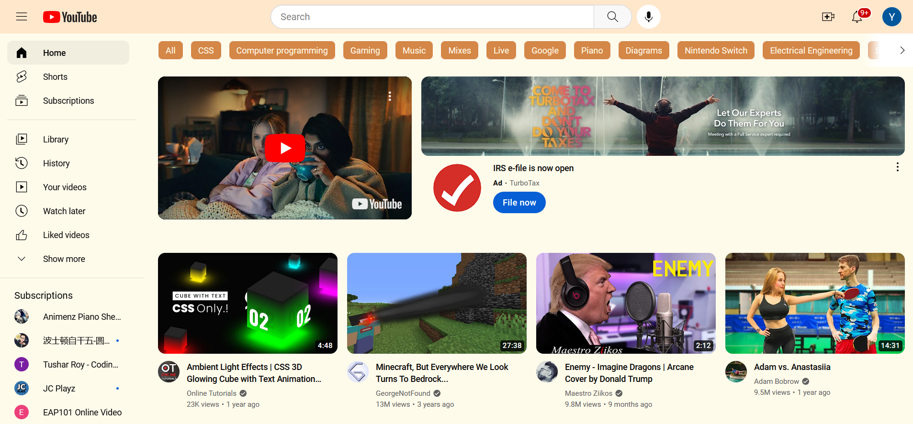
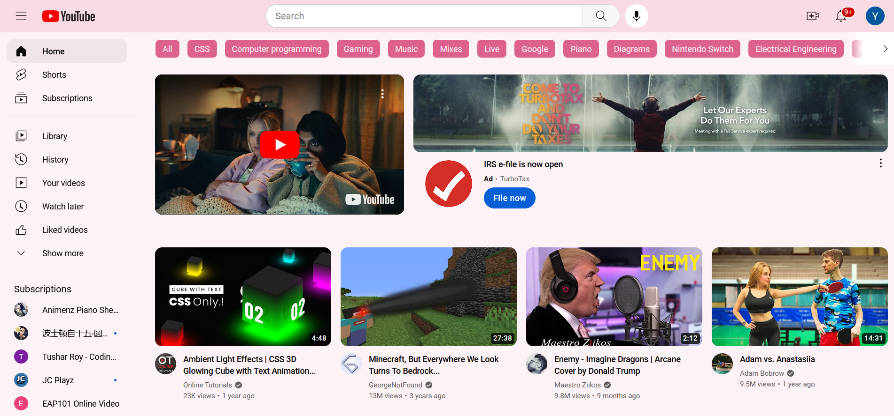
Homepage
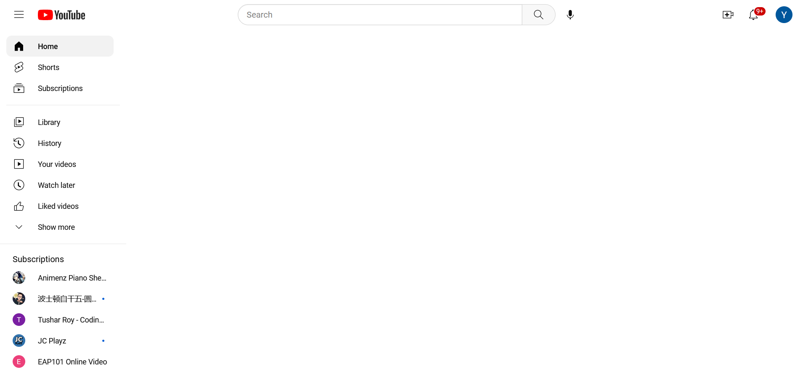
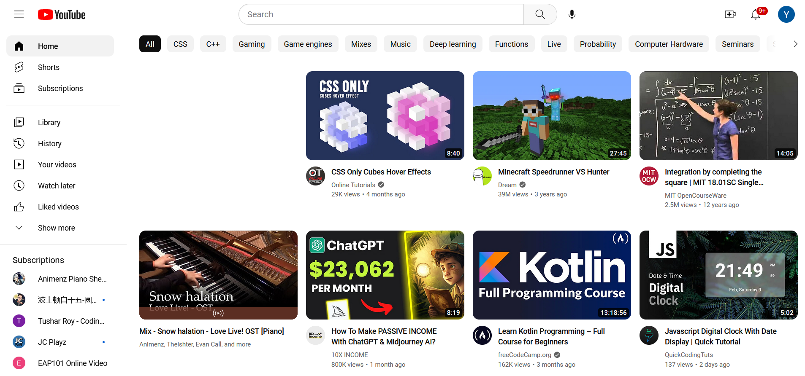
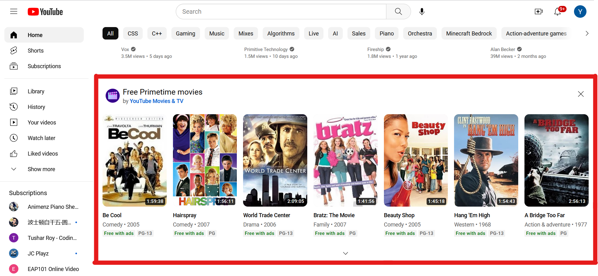
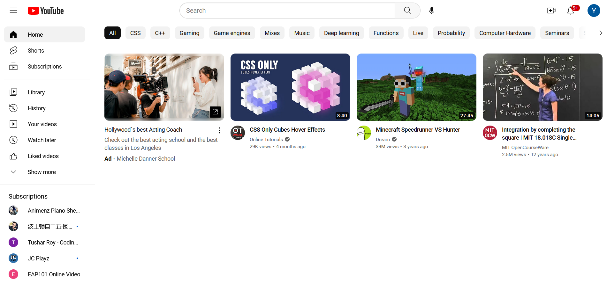
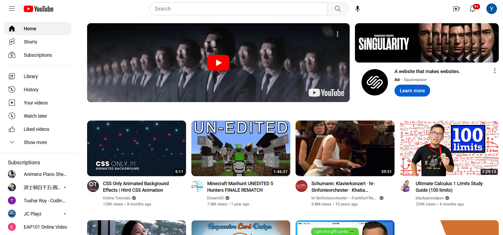
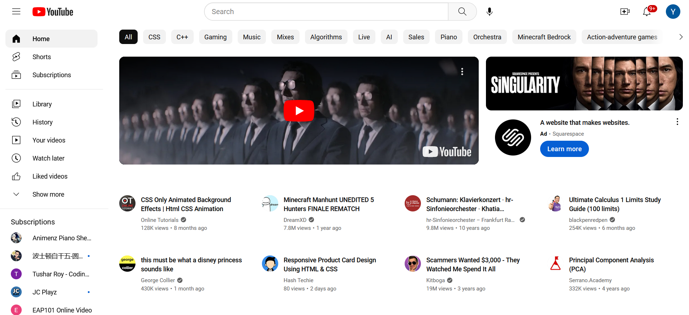
Navigation Bar
Video Player
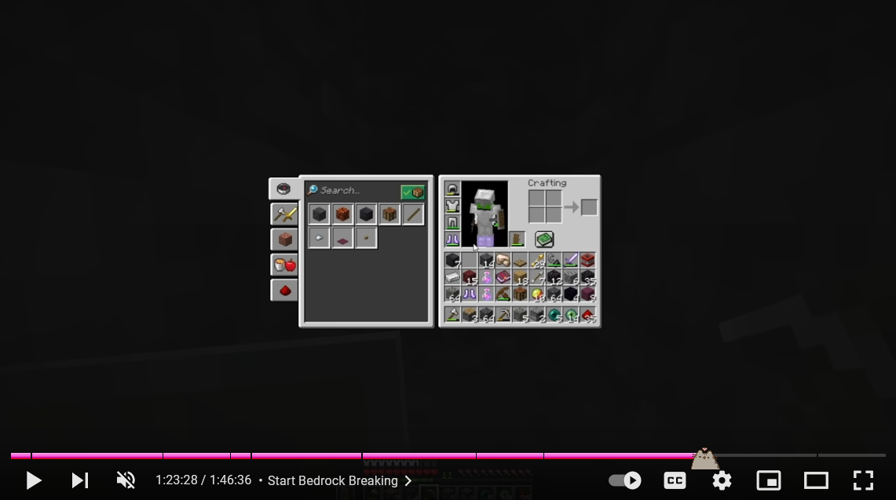
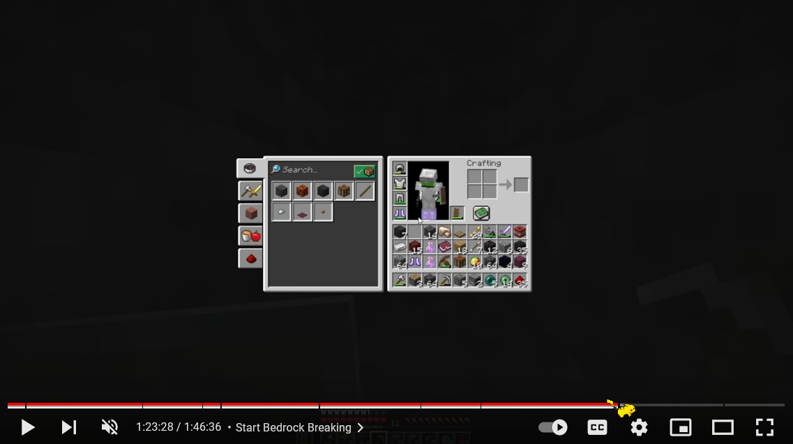
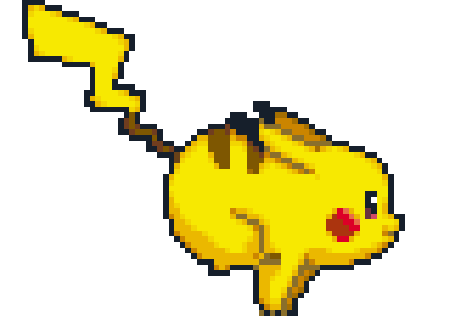
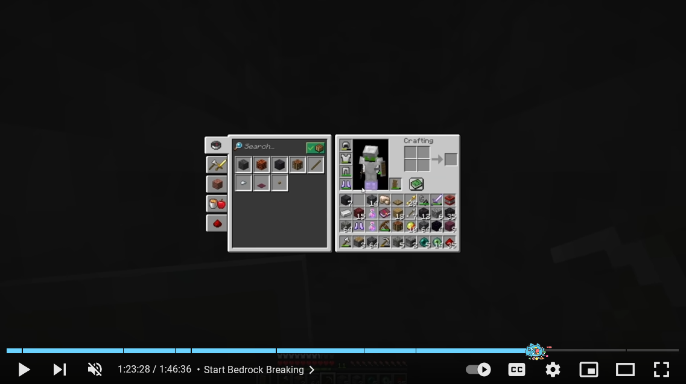
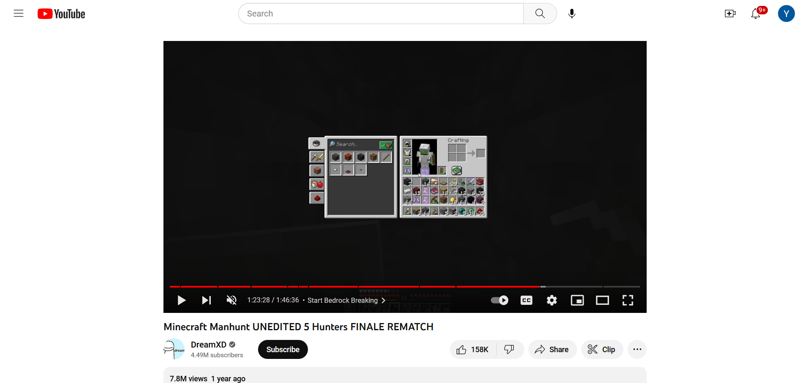
This blocks the end-of-video suggestions from generating.
This hides the Like / Dislike button, the Share button, the Clip button, and the More button.
YouTube video player sometimes generates a merch shelf below the video meta information. This prevents the entire merch shelf from appearing.
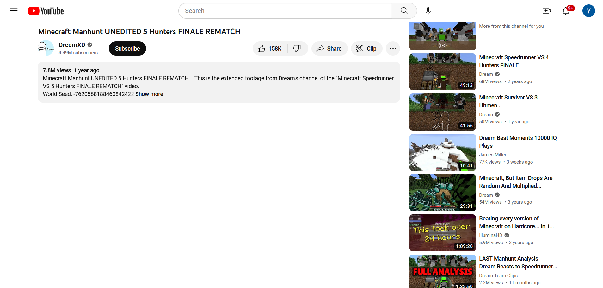
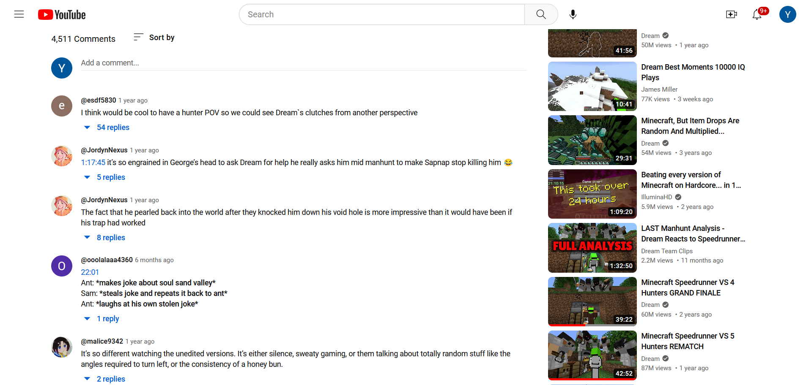
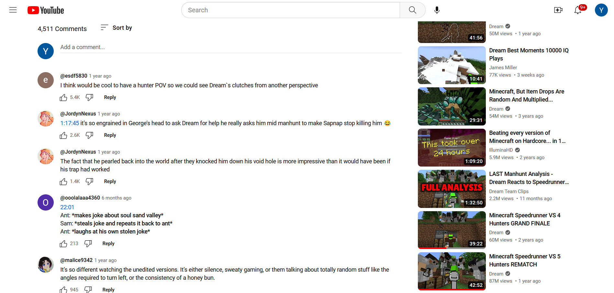
Support
Contribution
This is an open source project and we welcome your contributions. For details, please visit the Contribution page. Also see the Code of Conduct document for community behavior. Here are some brief contributing guidelines:
- Code of Conduct: This project adheres to the Code of Conduct. By participating, you are expected to uphold this code.
- Bugs and Feature Requests: To report a bug or request a new feature, please use the GitHub issue tracker. When reporting a bug, please include as much information as possible, such as the version of the extension you are using, the browser version, and steps to reproduce the issue. The above also applies to bugs reporting and feature requests via submitting .
-
Submitting Changes:
We use the GitFlow branching model for our development process. To contribute, follow these steps:
- Fork the repository.
- Create a new branch from the develop branch.
- Make your changes.
- Run the tests to make sure your changes do not introduce any new bug.
- Commit your changes with a descriptive message.
- Push the branch to your fork.
- Create a pull request to the develop branch of the original repository.
- Styleguides: For JavaScript, we use the JavaScript Standard Style. For HTML and CSS, we use the Google HTML/CSS Style Guide.
License